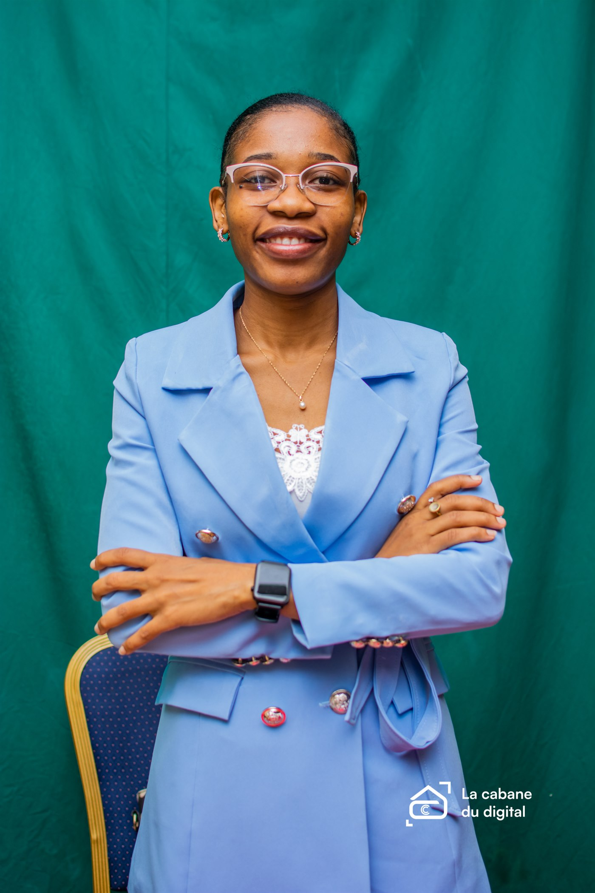

Frontend
HTML, CSS, JavaScript, WordPress, Elementor
Portfolio | Fullstack & IA
Je conçois des solutions numeriques elegantes, utiles et accessibles pour accompagner la transformation digitale des organisations et des services au Cameroun.

A propos
Ingenieure en intelligence artificielle avec une base solide en mathematiques, reseaux informatiques et developpement web, je construis des solutions completes, de l'idee jusqu'au produit.
Mon ambition est de contribuer a la digitalisation des services publics et prives avec des applications fiables, securisees et pensees pour les besoins locaux.
Competences
HTML, CSS, JavaScript, WordPress, Elementor
Python, Django, Flask, API, logique metier
Machine learning, NLP, analyse de donnees, automatisation
Reseaux, administration systeme, maintenance et deploiement
Projets
Application de gestion et de communication concue pour faciliter les interactions entre utilisateurs et structurer les flux applicatifs.
Conception de sites modernes, responsives et clairs pour aider les clients a renforcer leur presence en ligne.
Scripts pour accelerer les processus repetitifs, reduire les erreurs et faire gagner du temps aux equipes.
Concept de service numerique pour demandes administratives, suivi de dossier et experience citoyen plus fluide.
Vision
Je souhaite participer a des projets qui modernisent les services, ameliorent l'acces a l'information et rendent les outils numeriques plus utiles, plus simples et plus performants.
Experience
Developpement de sites web professionnels, optimisation des processus internes et accompagnement des clients.
Installation et configuration reseau, maintenance des systemes et amelioration de la stabilite de l'infrastructure.
Analyse de donnees, participation au developpement logiciel et collaboration sur des projets numeriques.
Formation
Approche systeme, developpement et architectures logicielles.
Base analytique solide pour la programmation et la data.
Badge Credly disponible en ligne pour valoriser le parcours.